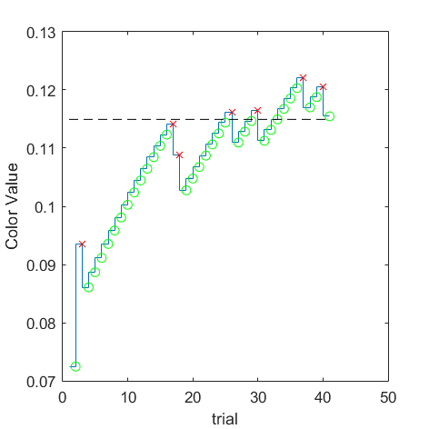
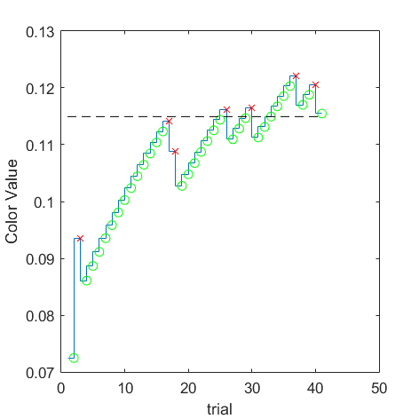

(VRR_Frequency=0.5/Size_Degree=0.5) = 0.060305
(VRR_Frequency=0.5/Size_Degree=1) = 0.079187
(VRR_Frequency=0.5/Size_Degree=16) = 0.104785
(VRR_Frequency=0.5/Size_Degree=full) = 0.073997

(VRR_Frequency=2/Size_Degree=0.5) = 0.0802327
(VRR_Frequency=2/Size_Degree=1) = 0.110616
 

(VRR_Frequency=2/Size_Degree=16) = 0.114938
(VRR_Frequency=2/Size_Degree=full) = 0.110363
(VRR_Frequency=4/Size_Degree=0.5) = 0.0952056
(VRR_Frequency=4/Size_Degree=1) = 0.104517
(VRR_Frequency=4/Size_Degree=16) = 0.116581
(VRR_Frequency=4/Size_Degree=full) = 0.117433
(VRR_Frequency=8/Size_Degree=0.5) = 0.0976232
(VRR_Frequency=8/Size_Degree=1) = 0.116349
(VRR_Frequency=8/Size_Degree=16) = 0.122601
(VRR_Frequency=8/Size_Degree=full) = 0.115428